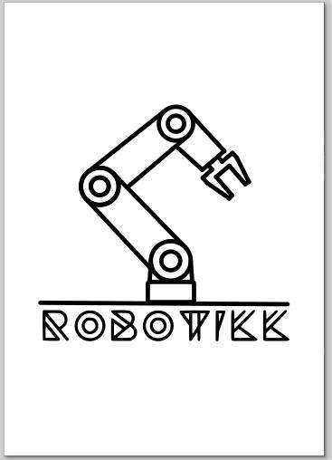
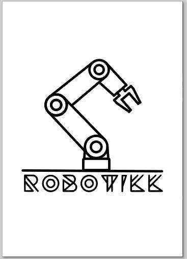
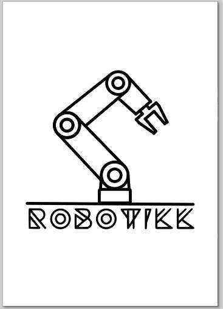
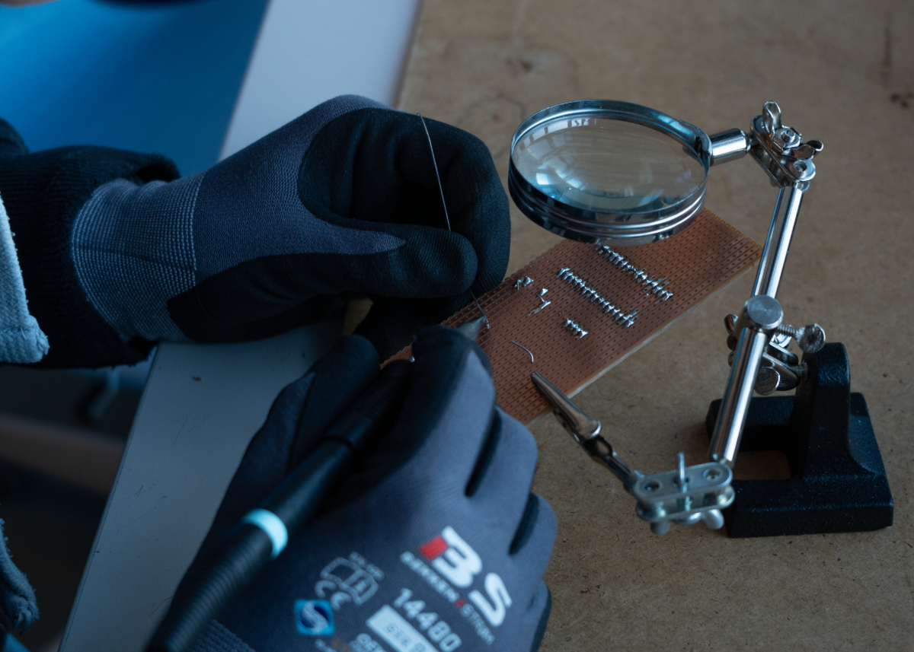
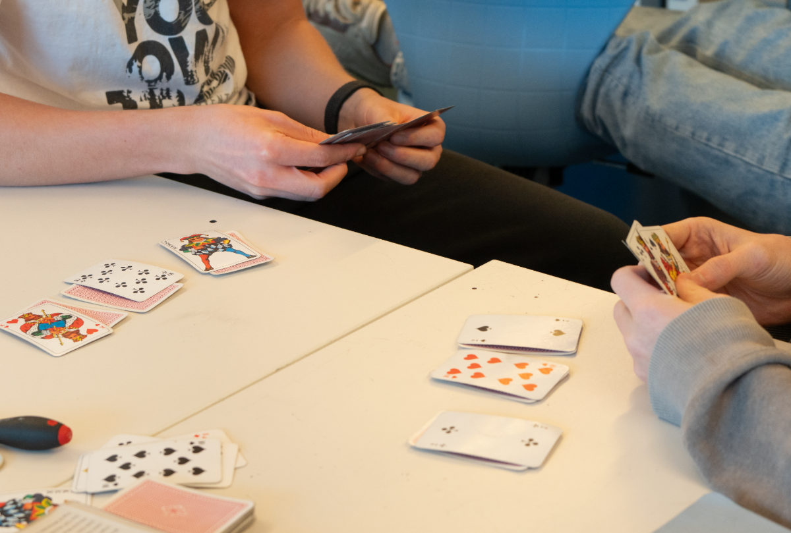

Kontaktinfo
Sted:
Kuben videregående skole
-
Kontaktlærere:
- Thanh Tien Nguyen
- Jakob Anders Rockenberger
- Colin Andrew Vinson
 
 Epost-adresse:
info.robotikklinja@osloskolen.no
Følg oss på sosiale medier:
På en størrelse på 16-18 elever per klasse jobber vi med elektriske kretser, lager nettverk, jobber med robotarmer og automasjon. Folk flest søker vanlig studiespesialisering, men i dette løpet vil du kunne få utforsket elektrofagene og få studiekompetanse i tillegg. Du kan dermed søke på nesten alle studier på lik linje med de som går vanlig studie!
Fra og med skoleår 2025/2026 vil det være 2 klasser for hvert trinn på robotikk. Det betyr at du som skal søke vgs har nå større sjanse på å komme inn på robotikklinja!
Sted:
Kuben videregående skole
 | Vg1 | Vg2 | Vg3 |
|---|---|---|
| Matematikk 1T | Matematikk R1 | Matematikk R2 |
| Norsk | Norsk | Norsk |
| Naturfag EL | Elenergisystemer | Naturfag Påbygg |
| Engelsk | Fysikk 1 | Fysikk 2 |
| Kroppsøving | Kroppsøving | Kroppsøving |
| Elektroniske kretser og nettverk | Automasjon | Historie |
| Yrkesfaglig fordypning | Yrkesfaglig fordypning | |
| Elenergi |
Teknologien er fremtiden og det er derfor mange store arbeidsmuligheter for deg som går denne linjen. Til videre studier er det mulig å ta en bachelor eller mastergrad i kybernetikk og robotteknologi. I tillegg får du realfag med studiekompetanse som vil gjøre at du kan søke på nesten alle studier tilgjengelige, dermed kan man også søke noe som ikke er relatert til robotikk også.
I løpet av vg2 kommer elevene til å få i oppdrag å utplassere seg en hel uke i høst- og vår termin. Dette er for å la dem utforske hvordan det er å jobbe i bedrift og utforske deres fremtidige muligheter. Deretter i vg3 utplasserer de seg en dag i uka hele skoleåret. Hva de utplasserer seg i er opptil elevene. Har man ikke utplassering er det mulig å jobbe med prosjekter på skolen. Da er det du som bestemmer hva prosjektet skal være. For eksempel har noen elever jobbet med markedsføring, programmering, lage nettside, robovision og mer.
Gjennom robotikklinjen vil du jobbe både teoretisk og praktisk. I elektrofagene som elenergi og automasjon vil du skrive dokumentasjoner, bygge anlegg eller elektroniske kretser. Da vil du kunne jobbe med mange ulike prosjekter og blant annet bygge en håndkontroller, jobbe med regulering, bygge styresystemer og mer. Du er veldig fri til å velge hvilket prosjekt du vil jobbe med, med også god veildning og oppfølging fra lærerne under prosessen. Med det du lærer på skolen, kan du bruke det ute i industrien. Det er mye som automatiseres i dag og dette
Siden skoleår 2022/2023 har det blitt arrangert RoboCompetition. Først ble det kalt Robocup og etter hvert utviklet til en konkurranse (RoboCompetition) der en vinner blir kåret og får premie. I år er det Norge, Sveits, Nederland, Danmark, Tyskland og potensielt Tyrkia og Italia, som er med i denne konkurransen.
RoboComp varer i 1 uke. Ulike land arrangerer til ulike tider på året. Lagene møter hverandre elektronisk på forkant av konkurransen for å bli kjent med hverandre. På konkurransen har de 4 dager med øving med robotene, problemløsning og å løse konkurranse-delen. I tillegg til dette vil de også gjøre sosiale aktiviteter for å bånde sammen. Alt det de har gjort presenterer de foran alle lagene og eventuelt andre elever og ansatte på fredag. Under presentasjonene deres vil de bli vurdert av dommere og de vil kåre en vinner, men alt i alt er alle vinnere.
I tillegg til å jobbe hardt med elektronikk og vanlig studie har vi også sosiale ting på robotikk. Blant annet har vi vært på bowling, paintball, klatrepark, stranda, teater og mer. Disse skjer noen ganger knyttet til undervisningen og ellers bare for å ha det gøy! Det er viktig å ha et godt bånd med de man går i klasse med for i en robotikklasse for dere har nesten de samme fagene og tilbringer derfor mye tid sammen.
